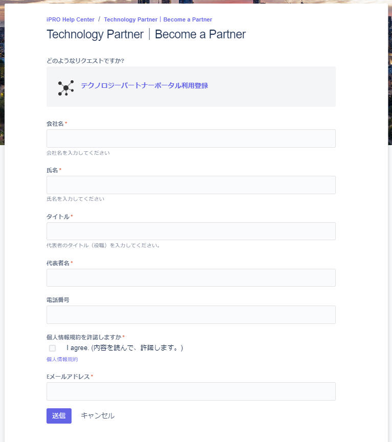
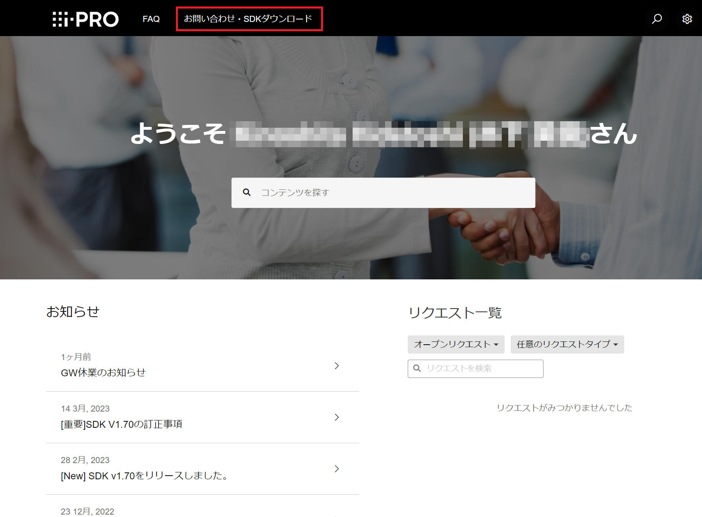
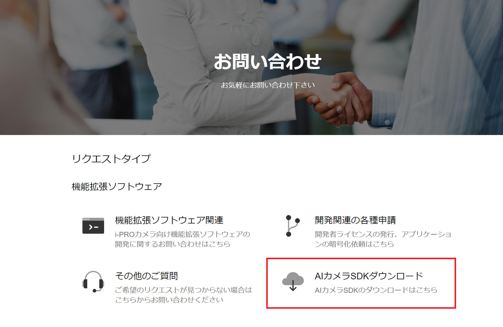
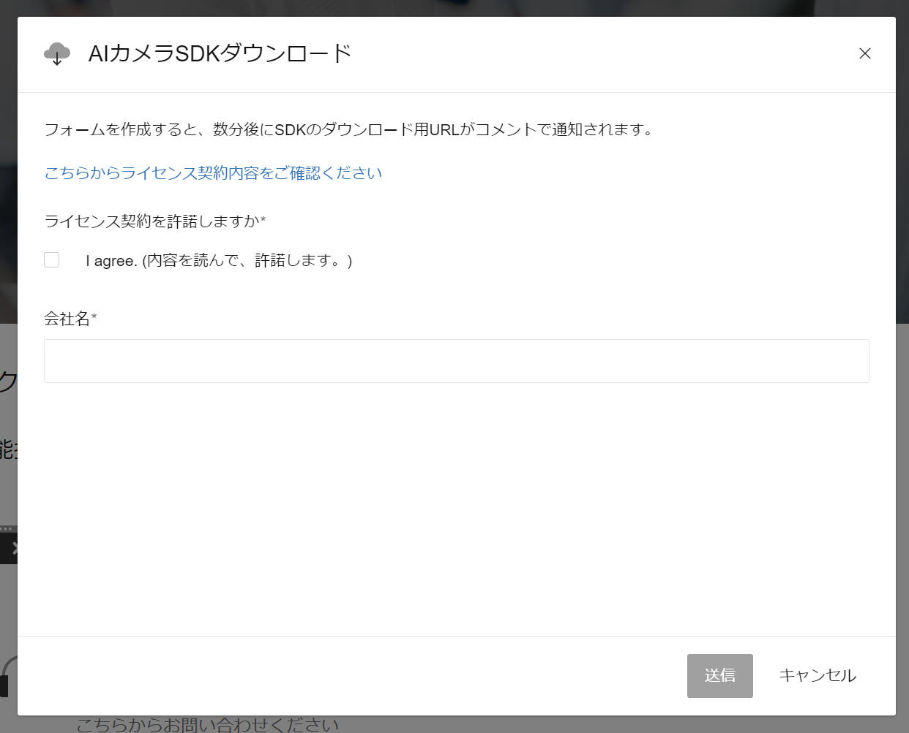

本ページは i-PRO株式会社 の有志メンバーにより記載されたものです。
本ページの情報は ライセンス に記載の条件で提供されます。
AIカメラSDKダウンロード、FAQなど技術情報の閲覧方法、について記載します。
SDK はサンプルアプリケーションのソースコードを含みます。アプリケーションにあなた独自の改造を行って使用することが可能です。詳細は各アプリケーション添付のライセンス情報などをご確認ください。
i-PRO 機能拡張ソフトウェア開発のためのSDK取得手順について記載します。
［手順１］
Development Partner Portal へアクセスします。
［手順２］
[アカウントを作成する] ボタンをクリックして画面の指示に従ってあなたのアカウント作成を行います。

［手順３］
登録したあなたのアカウントでログインします。
［手順４］
Development Partner Portal (i-pro.com) 画面上部の「お問い合わせ・SDKダウンロード」メニューをクリックします。

［手順５］
「AIカメラSDKダウンロード」をクリックします。

［手順６］
画面の指示に従って必要事項を入力した後、［送信］ボタンをクリックします。

［手順７］
届いたメールに記載のURLをクリックしてSDKを取得します。
SDKダウンロード についての説明は以上です。
i-PRO カメラの機能拡張ソフトウェア開発のための各種文書を下記からご確認いただけます。
こちらに記載の "開発環境構築" などを参照して各種準備や詳細について確認を行ってください。
本ページ紹介は以上です。その他詳細などは以上で紹介した URL などを参照ください。
| 2023/10/4 | - | 新規作成, | 崎戸梨恵 木下英俊 |
i-PRO - Programming Items トップページ